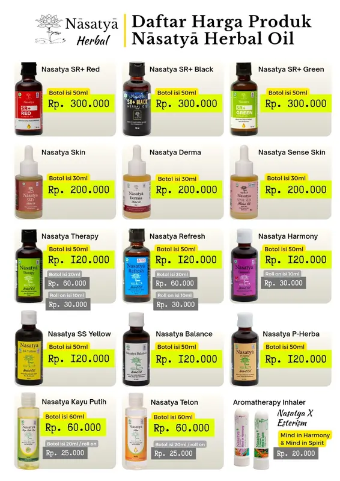

Kisah & Filosofi
Kearifan Leluhur,
Kemurnian Sains Modern.
Nāsatyā Herbal lahir dari keyakinan bahwa tubuh manusia memiliki kemampuan alami untuk memulihkan diri, asalkan didukung oleh sari pati tumbuhan murni yang tidak dirusak oleh proses kimia atau suhu panas.

Sains Formulasi
Mengapa Metode Cold-Process Sangat Krusial?
Sebagian besar minyak herbal tradisional di pasaran diolah dengan cara direbus atau digoreng bersama rempah-rempah. Meskipun cepat dan murah, suhu panas di atas 60°C terbukti secara ilmiah merusak struktur ikatan kimia minyak atsiri serta membakar antioksidan alami tanaman.
Nāsatyā memilih jalan yang lebih panjang dan teliti: Pencampuran Dingin (Cold-Process). Seluruh bahan disatukan dan dimaserasi pada suhu ruang terkendali, sehingga 100% molekul bioaktif, aroma terapeutik, dan daya serapnya tetap berada pada potensi maksimal saat menyentuh kulit Anda.
"Jika senyawa aktif tanaman rusak oleh api, tubuh hanya menerima minyak beraroma gosong, bukan khasiat penyembuhannya."
Dua Lapis Sinergis
Anatomi Formulasi Nāsatyā
Kemurnian Tanpa Pengencer Sintesis
Rasio Konsentrasi 300kg Tanaman
Banyak orang mengira essential oil sama dengan bumbu dapur biasa. Kenyataannya, untuk menghasilkan 1 liter minyak atsiri murni, dibutuhkan antara 300 kilogram hingga 2 ton tanaman herbal segar.
Rasakan Khasiatnya Sendiri
Temukan Varian Nāsatyā yang Tepat Untuk Anda
Jelajahi 14 varian yang telah diformulasikan secara presisi untuk berbagai kebutuhan kesehatan Anda dan keluarga.